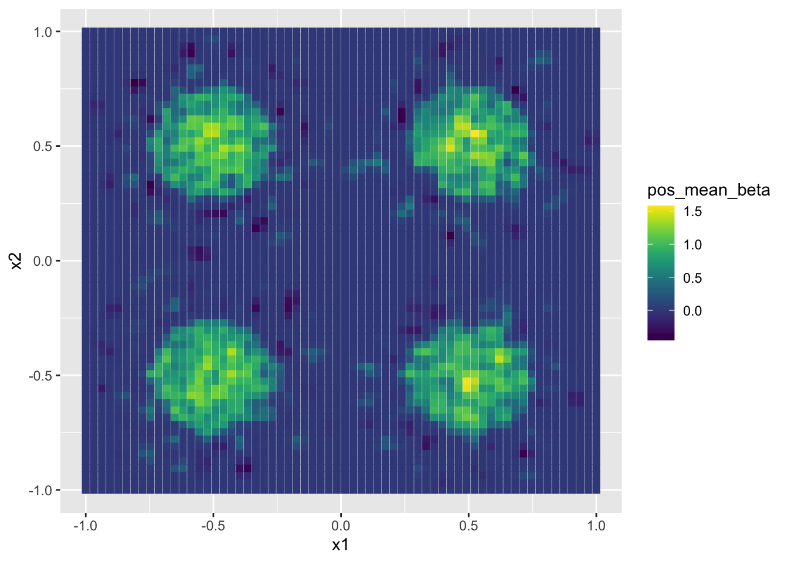
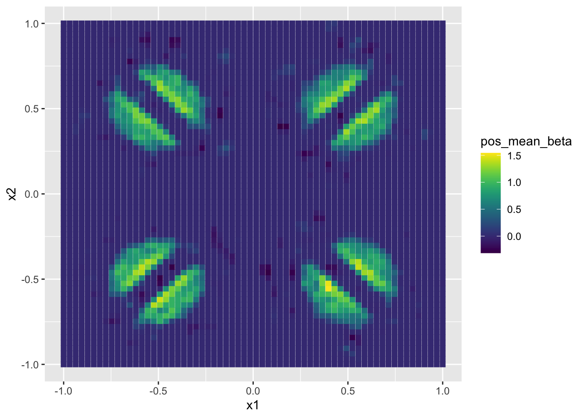

Last updated: 2021-10-03
Checks: 7 0
Knit directory: BMA_analysis/
This reproducible R Markdown analysis was created with workflowr (version 1.6.2). The Checks tab describes the reproducibility checks that were applied when the results were created. The Past versions tab lists the development history.
Great! Since the R Markdown file has been committed to the Git repository, you know the exact version of the code that produced these results.
Great job! The global environment was empty. Objects defined in the global environment can affect the analysis in your R Markdown file in unknown ways. For reproduciblity it’s best to always run the code in an empty environment.
The command set.seed(20210926) was run prior to running the code in the R Markdown file. Setting a seed ensures that any results that rely on randomness, e.g. subsampling or permutations, are reproducible.
Great job! Recording the operating system, R version, and package versions is critical for reproducibility.
Nice! There were no cached chunks for this analysis, so you can be confident that you successfully produced the results during this run.
Great job! Using relative paths to the files within your workflowr project makes it easier to run your code on other machines.
Great! You are using Git for version control. Tracking code development and connecting the code version to the results is critical for reproducibility.
The results in this page were generated with repository version 33d7e53. See the Past versions tab to see a history of the changes made to the R Markdown and HTML files.
Note that you need to be careful to ensure that all relevant files for the analysis have been committed to Git prior to generating the results (you can use wflow_publish or wflow_git_commit). workflowr only checks the R Markdown file, but you know if there are other scripts or data files that it depends on. Below is the status of the Git repository when the results were generated:
Ignored files:
Ignored: .DS_Store
Ignored: .Rhistory
Ignored: .Rproj.user/
Unstaged changes:
Deleted: analysis/about.Rmd
Deleted: analysis/license.Rmd
Note that any generated files, e.g. HTML, png, CSS, etc., are not included in this status report because it is ok for generated content to have uncommitted changes.
These are the previous versions of the repository in which changes were made to the R Markdown (analysis/2021-10-01_simulations_inclusion_map.Rmd) and HTML (docs/2021-10-01_simulations_inclusion_map.html) files. If you’ve configured a remote Git repository (see ?wflow_git_remote), click on the hyperlinks in the table below to view the files as they were in that past version.
| File | Version | Author | Date | Message |
|---|---|---|---|---|
| Rmd | 33d7e53 | yuliangxu | 2021-10-03 | Second Analysis using inclusion map |
In this analysis of the simulated mcmc samples, 2000 mcmc samples are used for beta, 200 mcmc samples are used for alpha. Total indirect effect used 200 thinned samples from beta and 200 samples in alpha.
Content of the analysis:
knitr::kable(tab_beta)| Dense20 | Sparse20 | Sparse15 | |
|---|---|---|---|
| FDR pos_mean | 0.6046 | 0.6465 | 0.6465 |
| Precision pos_mean | 0.6779 | 0.7048 | 0.7048 |
| Power pos_mean | 0.9853 | 0.9813 | 0.9813 |
| FDR inclusion_(fdr_tuned) | 0.1979 | 0.1948 | 0.1471 |
| Precision inclusion_(fdr_tuned) | 0.9367 | 0.9501 | 0.9587 |
| Power inclusion_(fdr_tuned) | 0.9291 | 0.9130 | 0.9003 |
| FDR inclusion_0.5 | 0.3101 | 0.2537 | 0.2537 |
| Precision inclusion_0.5 | 0.8993 | 0.9367 | 0.9367 |
| Power inclusion_0.5 | 0.9521 | 0.9252 | 0.9252 |
knitr::kable(tab_alpha)| Dense20 | Sparse20 | Sparse15 | |
|---|---|---|---|
| FDR pos_mean | 0.0000 | 0.0000 | 0.0000 |
| Precision pos_mean | 0.9999 | 0.9982 | 0.9982 |
| Power pos_mean | 0.9992 | 0.9897 | 0.9897 |
| FDR inclusion_(fdr_tuned) | 0.0000 | 0.0000 | 0.0000 |
| Precision inclusion_(fdr_tuned) | 0.9998 | 0.9981 | 0.9981 |
| Power inclusion_(fdr_tuned) | 0.9986 | 0.9891 | 0.9891 |
| FDR inclusion_0.5 | 0.5201 | 0.3442 | 0.3442 |
| Precision inclusion_0.5 | 0.8474 | 0.8886 | 0.8886 |
| Power inclusion_0.5 | 0.9937 | 0.7582 | 0.7582 |
knitr::kable(tab_total)| Dense20 | Sparse20 | Sparse15 | |
|---|---|---|---|
| FDR pos_mean | 0.0000 | 0.1608 | 0.1608 |
| Precision pos_mean | 0.9996 | 0.9726 | 0.9726 |
| Power pos_mean | 0.9974 | 0.9839 | 0.9839 |
| FDR inclusion_(fdr_tuned) | 0.0000 | 0.0187 | 0.0187 |
| Precision inclusion_(fdr_tuned) | 0.9974 | 0.9854 | 0.9854 |
| Power inclusion_(fdr_tuned) | 0.9818 | 0.9081 | 0.9081 |
| FDR inclusion_0.5 | 0.5201 | 0.3735 | 0.3735 |
| Precision inclusion_0.5 | 0.8474 | 0.9169 | 0.9169 |
| Power inclusion_0.5 | 0.9937 | 0.9411 | 0.9411 |
knitr::kable(tab_mse)| Dense20 | Sparse20 | Sparse15 | |
|---|---|---|---|
| beta inclusion_(fdr_tuned)_1 | 0.0120 | 0.0029 | 0.0028 |
| alpha inclusion_(fdr_tuned)_1 | 0.0000 | 0.0001 | 0.0001 |
| total inclusion_(fdr_tuned)_1 | 0.0017 | 0.0004 | 0.0004 |
| beta inclusion_(fdr_tuned)_0 | 0.0014 | 0.0003 | 0.0004 |
| alpha inclusion_(fdr_tuned)_0 | 0.0000 | 0.0000 | 0.0000 |
| total inclusion_(fdr_tuned)_0 | 0.0000 | 0.0000 | 0.0000 |
| beta inclusion_0.5_1 | 0.0127 | 0.0030 | 0.0030 |
| alpha inclusion_0.5_1 | 0.0000 | 0.0001 | 0.0001 |
| total inclusion_0.5_1 | 0.0017 | 0.0004 | 0.0004 |
| beta inclusion_0.5_0 | 0.0007 | 0.0002 | 0.0002 |
| alpha inclusion_0.5_0 | 0.0000 | 0.0000 | 0.0000 |
| total inclusion_0.5_0 | 0.0000 | 0.0000 | 0.0000 |
I run 2 set of simulations, each with 100 replicates, one replicate being a dataset of n=1000. The true image consists of 64 x 64 pixels, evenly divided into 4 regions, the number of basis functions for each region is 231. Total p = 4096, total L= 924.
In the first simulation, there is ONE cluster of signals within each region for both true alpha and beta. This will be denoted as “dense” in the result table.
datsim = readRDS(file.path(dpath,"data1.rds"))
ggplot(grids) + geom_point(aes(x1, x2, color = datsim$beta_test_ST),shape=15,size=2) + scale_color_viridis()ggplot(grids) + geom_point(aes(x1, x2, color = datsim$alpha_test_ST),shape=15,size=2) + scale_color_viridis()In the first simulation, there is TWO cluster of signals within each region for both true alpha and beta. This will be denoted as “sparse” in the result table.
datsim2 = readRDS(file.path(dpath2,"data1.rds"))
ggplot(grids) + geom_point(aes(x1, x2, color = datsim2$beta_test_ST),shape=15,size=2) + scale_color_viridis()ggplot(grids) + geom_point(aes(x1, x2, color = datsim2$alpha_test_ST),shape=15,size=2) + scale_color_viridis()In addition, in the FDR control procedure, the value delta affects the controlled FDR, so is the sample size. In the result below, I reported 2 result for each simulation when setting delta to 0.1 and 0.01. The number of samples used for beta is 2000, and for alpha is 200. For beta, the MCMC sample is thinned, taken once in every 10 samples.
Dense case
n_rep=1
Y_result = readRDS(file.path(rpath,paste("simy",n_rep,".rds",sep="") ))
datsim = readRDS(file.path(dpath,paste("data",n_rep,".rds",sep="") ))
n_mcmc = dim(Y_result$theta_beta_mcmc_thin)[2]
theta_sample = Y_result$theta_beta_mcmc_thin[,ceiling(n_mcmc*0.8):n_mcmc]
beta_sample = STGP_mcmc(theta_sample,region_idx,basis_sq,lambda = datsim$lambda)
pos_mean_beta = apply(beta_sample,1,mean)
ggplot(grids) + geom_point(aes(x1, x2, color = pos_mean_beta),shape=15,size=2) + scale_color_viridis()
M_result = readRDS(file.path(rpath,paste("simm",n_rep,".rds",sep="") ))
n_mcmc = dim(M_result$theta_alpha_mcmc)[2]
theta_sample = M_result$theta_alpha_mcmc[,ceiling(n_mcmc*0.9):n_mcmc]
alpha_sample = STGP_mcmc(theta_sample,region_idx,basis_sq,lambda = datsim$lambda)
pos_mean_alpha = apply(alpha_sample,1,mean)
ggplot(grids) + geom_point(aes(x1, x2, color = pos_mean_alpha),shape=15,size=2) + scale_color_viridis()Sparse case
Y_result = readRDS(file.path(rpath2,paste("simy",n_rep,".rds",sep="") ))
datsim = readRDS(file.path(dpath2,paste("data",n_rep,".rds",sep="") ))
n_mcmc = dim(Y_result$theta_beta_mcmc_thin)[2]
theta_sample = Y_result$theta_beta_mcmc_thin[,ceiling(n_mcmc*0.8):n_mcmc]
beta_sample = STGP_mcmc(theta_sample,region_idx,basis_sq,lambda = datsim$lambda)
pos_mean_beta = apply(beta_sample,1,mean)
ggplot(grids) + geom_point(aes(x1, x2, color = pos_mean_beta),shape=15,size=2) + scale_color_viridis()
M_result = readRDS(file.path(rpath2,paste("simm",n_rep,".rds",sep="") ))
n_mcmc = dim(M_result$theta_alpha_mcmc)[2]
theta_sample = M_result$theta_alpha_mcmc[,ceiling(n_mcmc*0.9):n_mcmc]
alpha_sample = STGP_mcmc(theta_sample,region_idx,basis_sq,lambda = datsim$lambda)
pos_mean_alpha = apply(alpha_sample,1,mean)
ggplot(grids) + geom_point(aes(x1, x2, color = pos_mean_alpha),shape=15,size=2) + scale_color_viridis()
sessionInfo()R version 4.0.5 (2021-03-31)
Platform: x86_64-apple-darwin17.0 (64-bit)
Running under: macOS Big Sur 10.16
Matrix products: default
BLAS: /Library/Frameworks/R.framework/Versions/4.0/Resources/lib/libRblas.dylib
LAPACK: /Library/Frameworks/R.framework/Versions/4.0/Resources/lib/libRlapack.dylib
locale:
[1] en_US.UTF-8/en_US.UTF-8/en_US.UTF-8/C/en_US.UTF-8/en_US.UTF-8
attached base packages:
[1] stats graphics grDevices utils datasets methods base
other attached packages:
[1] RSpectra_0.16-0 cluster_2.1.2 mvtnorm_1.1-1 Matrix_1.3-2
[5] MASS_7.3-53.1 viridis_0.6.1 viridisLite_0.4.0 ggplot2_3.3.3
[9] BayesGPfit_1.1.0 lattice_0.20-41 workflowr_1.6.2
loaded via a namespace (and not attached):
[1] tidyselect_1.1.1 xfun_0.23 bslib_0.2.5.1 purrr_0.3.4
[5] colorspace_2.0-1 vctrs_0.3.8 generics_0.1.0 htmltools_0.5.1.1
[9] yaml_2.2.1 utf8_1.2.1 rlang_0.4.11 jquerylib_0.1.4
[13] later_1.2.0 pillar_1.6.1 glue_1.4.2 withr_2.4.2
[17] DBI_1.1.1 lifecycle_1.0.0 stringr_1.4.0 munsell_0.5.0
[21] gtable_0.3.0 evaluate_0.14 labeling_0.4.2 knitr_1.33
[25] httpuv_1.6.1 fansi_0.5.0 highr_0.9 Rcpp_1.0.6
[29] promises_1.2.0.1 scales_1.1.1 jsonlite_1.7.2 farver_2.1.0
[33] fs_1.5.0 gridExtra_2.3 digest_0.6.27 stringi_1.6.1
[37] dplyr_1.0.6 grid_4.0.5 rprojroot_2.0.2 tools_4.0.5
[41] magrittr_2.0.1 sass_0.4.0 tibble_3.1.2 crayon_1.4.1
[45] whisker_0.4 pkgconfig_2.0.3 ellipsis_0.3.2 assertthat_0.2.1
[49] rmarkdown_2.9 R6_2.5.0 git2r_0.28.0 compiler_4.0.5